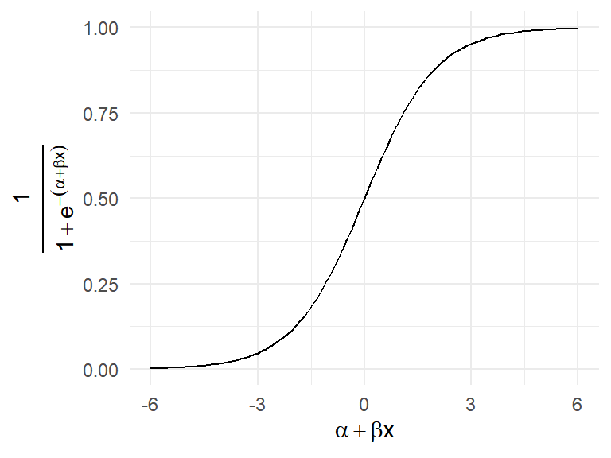
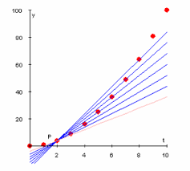

ggplot(data = ESS) +
# Make a bar chart.
geom_bar(aes(x = discr,
# Show proportion instead of count.
y = ..prop.., group = 1)) +
labs(y = "Probability \n (i.e., proportion or relative frequency)",
x = "Belonging to a group that is discriminated \n based on race, ethnicity, language, or religion") +
theme_minimal()Einführung in R und Quarto
Generalized Linear Models (GLM) with a focus on logistic regression
Andreas Haupt
Let’s get ready
Categorical outcomes
Focus on binary outcomes
When we predict a binary outcome, we want to predict \(\text{Pr}(y = 1)\), for instance \(\text{Pr}(y = \text{Discrimination})\).
Linear probability model (LPM)
Using a linear model (and OLS estimation) to predict a binary outcome yields the so-called Linear Probability Model. LPMs predict the probability that the outcome equals 1 for each respondent \(\hat{\text{Pr}}(y_i = 1)\), given \(x_i\).
ggplot(data = ESS,
aes(y = (as.numeric(discr) - 1),
x = agea)) +
geom_jitter(aes(size = pspwght),
alpha = 1/5, height = 0.05) +
geom_smooth(aes(weight = pspwght),
method = "lm", se = FALSE) +
theme(legend.position="none") +
labs(y = "Probability of belonging to a group discriminated \n based on race, ethnicity, language, or religion",
x = "Age") +
theme_minimal()Linear probability model (LPM)
Because errors of an LPM will always be heteroscedastic, we need to estimate robust standard errors.
Multiple predictors
The problem of linear models
LPMs may predict outcomes that make no sense! For instance, LPMs may predict probabilities larger than 1, or smaller than 0. \(\hat{\text{Pr}}(y_i = 1) > 1\), or \(\hat{\text{Pr}}(y_i = 0) < 0\).
ggplot(data = ESS,
aes(y = (as.numeric(discr) - 1),
x = agea)) +
geom_jitter(aes(size = pspwght),
alpha = 1/5, height = 0.05) +
geom_smooth(aes(weight = pspwght),
method = "lm", se = FALSE,
# draw line beyond observed cases.
fullrange = TRUE) +
theme_minimal() +
theme(legend.position="none") +
labs(y = "Probability of belonging to a group discriminated \n based on race, ethnicity, language, or religion",
x = "Age") +
xlim(c(16, 120)) # Extend range of x-axis.The problem of linear models
This may happen particularly, when LPMs become complex (i.e., with many predictor variables). Note, if you only have categorical predictors, an LPM is perfectly valid and does not suffer from any problems (Angrist and Pischke 2009, Ch. 3.1.4)!
For old and low-educated men from Germany, our model predicts negative probabilities to belong to a group that is discriminated based on race, ethnicity, language or religion; what is that supposed to mean?!
Generalized linear models (GLM)
The idea of generalized linear models is to stick to a linear model (i.e., \(\alpha + \beta x\)), but to map/project its results onto the range of the outcome \(y_{i}\).
We can achieve this by using so-called link functions \(g^{-1}\), along with their inverse \(g\):
\[\begin{align*} y &= g^{-1}(\alpha + \beta x) \\ g(y) &= \alpha + \beta x. \end{align*}\]
GLM for binary outcomes
\[\begin{align*} \text{logit}(y_{i}) &= \alpha + \beta x, \\ y_{i} &= \text{logit}^{-1}(\alpha + \beta x) \\ & = \text{logistic}(\alpha + \beta x) \\ &= \frac{1}{1+e^{-(\alpha + \beta x)}}. \end{align*}\]
| \(\alpha + \beta x\) | \(e^{(\alpha + \beta x)}\) | \(\frac{1}{e^{(\alpha + \beta x)}} \color{gray}{= e^{-(\alpha + \beta x)}}\) | \(\frac{1}{1 + e^{(\alpha + \beta x)}}\) | \(\frac{1}{1 +e^{-(\alpha + \beta x)}}\) |
|---|---|---|---|---|
| -2 | 0.135 | 7.389 | 0.881 | 0.119 |
| -1 | 0.368 | 2.718 | 0.731 | 0.269 |
| 0 | 1 | 1 | 0.5 | 0.5 |
| 1 | 2.718 | 0.368 | 0.269 | 0.731 |
| 2 | 7.389 | 0.135 | 0.119 | 0.881 |
We need a link function \(g^{-1}\) that maps/projects the results of our linear model to the range 0 to 1. One option is the sigmoid (i.e., s-shaped) logistic function, with its inverse the logit (logged odds):

Alternatives are the probit or cloglog link functions; results compared to logit hardly ever differ in meaningful ways.
Logistic regression
Aka the logistic link function
\[\text{logit}(y_{i}) = \alpha + \beta x\]
- \(\alpha\) and \(\beta\) are now measured in logits (logged odds); difficult to interpret!
- Re-transformed to probabilities, the size of \(\beta\) depends on the specific value of \(x\)!
- Exponentiated \(\beta\) (i.e., \(e^{\beta}\) ) can be interpreted as odds ratios, or as multiplicative “effect” (i.e., a % increase).
:::
Logistic regression in R
# Estimate Generalzed Linear Model
log_model <- glm(
formula = discr ~ I(agea / 10) +
I(eduyrs / 10) + gndr + cntry,
data = ESS,
family = binomial(link = "logit") # with logit link
)
# Give a summary of the LPM vs Logistic results.
screenreg(list(lpm2, log_model), include.ci = FALSE,
custom.model.names = c("LPM", "Logistic"))Remember, \(\alpha\) and \(\beta\) are now predicting \(\text{logit}(\hat{y_{i}})\). Based on a regression table, we are left with interpreting direction and significance.
Weights
Unfortunately, a bit messy to handle
# Estimate weighted Generalzed Linear Model
log_model2 <- glm(
formula = discr ~ I(agea / 10) +
I(eduyrs / 10) + gndr + cntry,
data = ESS,
family = quasibinomial(link = "logit"),
weights = pspwght)
# Create an object that contains coefficients
# and heteroscedasticity-robust inference
log_model2_rob <- lmtest::coeftest(
log_model2,
sandwich::vcovHC(log_model2))
# Summary of LPMs, plug in SEs by hand
screenreg(list(log_model, log_model2, log_model2_rob),
include.ci = FALSE,
custom.model.names = c("Unweighted", "Weighted",
"Weighted, robust SE"))LPM vs Logistic Regression

Source: www.datacamp.com
LPM vs Logistic Regression
ggplot(data = ESS,
aes(y = discr_logistic, x = discr_lpm)) +
geom_vline(xintercept = 0, color = "#901A1E") +
geom_point(alpha = 1/5) +
geom_smooth(se = FALSE) +
theme_minimal() +
labs(y = "Logistic regression-based \n predicted probability",
x = "LPM-based \n predicted probability",
title = "Belonging to a group discriminated \n based on race, ethnicity, language, or religion")Average Marginal Effects (AME)
Idea: Get the marginal effect (linear increase) at the logistic curve for every observation (combination of Xs) in the data set. Then calculate the average marginal (linear) effect. Basically gives you coefficients of an LPM but no prediction beyond 0/1.

Source: Richard Williams
Coefplot
# Turn model results into data
plotdata <- AME_log_model2 %>% # Use model object, then
tidy() %>% # Turn into tibble, then
# Keep only some info, then
dplyr::select(term, estimate, std.error) %>%
mutate( # get 95% CI and recode name of variables
min95 = estimate - std.error*qt(0.975, df = nrow(ESS)),
max95 = estimate + std.error*qt(0.975, df = nrow(ESS)),
term = fct_recode(factor(term),
"Age" = "agea",
"Years of education" = "eduyrs",
"Women" = "gndrFemale",
"Germany" = "cntryGermany",
"Norway" = "cntryNorway",
"Sweden" = "cntrySweden"))
ggplot(data = plotdata,
aes(x = reorder(term, estimate), y = estimate,
ymin = min95, ymax = max95)) +
geom_hline(yintercept = 0, # Null-hypothesis line
color = "#901A1E", lty = "dashed") +
geom_pointrange() + # Coefs with 95% CI.
coord_flip() + theme_minimal() +
labs(y = expression(beta), x = "") # Greek beta.Model predictions
Step 1: Generate synthetic data.
(synth_data <- ESS %>%
# Generate theoretically-informative
# and artificial tibble for predictions
data_grid(agea, eduyrs, gndr, cntry) %>%
mutate( # Set confounders constant at their mean,
eduyrs = mean(ESS$eduyrs, na.rm = TRUE),
cntry = "Denmark", # Or categories of interest
gndr = "Female") %>% # then
unique()) # Drop duplicates and missingsModel predictions
Step 2: Predict probabilities and 95% CI based on model.
# Generate predictions and 95% confidence intervals.
(synth_data <- synth_data %>%
mutate(
fit = predict(log_model2,
type = "response", newdata = .),
fit_se = predict(log_model2,
type = "response", newdata = .,
se.fit = TRUE)$se.fit,
min95 = fit - fit_se * qt(0.975, df = nrow(ESS)),
max95 = fit + fit_se * qt(0.975, df = nrow(ESS))
))Visualize the model predictions
ggplot(data = synth_data,
aes(y = fit, x = agea)) +
geom_ribbon(aes(ymin = min95, ymax = max95),
alpha = 0.5) +
geom_line() +
labs(x = "Age",
y = "Probability of belonging to a group \n discriminated based on \n race, ethnicity, language, or religion",
caption = "(Covariates set to: German Women with mean education)") +
theme_minimal()Interaction effects
# Estimate Generalzed linear model with logit(y)
log_model3 <- glm(formula = discr ~ I(agea / 10) +
I(eduyrs / 10)*cntry + gndr,
family = binomial(link = "logit"),
data = ESS, weights = pspwght)
# Create an object that contains coefficients
# and heteroscedasticity-robust inference
log_model3_rob <- lmtest::coeftest(log_model3,
vcovHC(log_model3))
# Summary of LPMs, plug in SEs by hand
screenreg(list(log_model2_rob, log_model3_rob),
include.ci = FALSE) # SE for second modelModel predictions
(synth_data <- ESS %>% # Use ESS_minority, then
# Create synthetic data, then
data_grid(agea, eduyrs, gndr, cntry) %>%
mutate( # Set confounders to a constant value, then
agea = mean(ESS$agea, na.rm = TRUE),
gndr = "Female") %>%
unique() %>% # Drop duplicates, then
mutate( # Get the predictions
fit = predict(log_model3,
type = "response",
newdata = .),
fit_se = predict(log_model3,
type = "response",
newdata = .,
se.fit = TRUE)$se.fit,
min95 = fit - fit_se*qt(0.975, df = nrow(ESS)),
max95 = fit + fit_se*qt(0.975, df = nrow(ESS))
))Visualize model predictions
ggplot(data = synth_data, aes(y = fit, x = eduyrs)) +
geom_line(aes(color = cntry)) +
labs(x = "Years of Education",
y = "Probability of belonging to a group \n discriminated based on \n race, ethnicity, language, or religion",
caption = "(Covariates set to: Women at mean age)") +
theme_minimal() +
theme(legend.position="bottom",
legend.title=element_blank())Visualize model predictions
ggplot(data = synth_data, aes(y = fit, x = eduyrs)) +
geom_ribbon(aes(ymin = min95, ymax = max95, fill = cntry), alpha = 1/10) +
geom_line(aes(color = cntry)) +
labs(x = "Years of Education",
y = "Probability of belonging to a group \n discriminated based on \n race, ethnicity, language, or religion",
caption = "(Covariates set to: Women at mean age)") +
theme_minimal() +
theme(legend.position="bottom",
legend.title=element_blank(),)Beyond binary outcomes
| Type | Example | Error distribution | Canonical link | R |
|---|---|---|---|---|
| Count | Wage | Negative Binomial | Neg. Bin. | MASS::glm.nb() |
| .. | .. | Poisson | log | glm(family = poisson(link = "log")) |
| .. | Accidents | Binomial & Neg. Bin. | Neg. Bin. | pscl::zeroinfl(dist = "negbin") |
| .. | Waiting time | Gamma | Inverse | glm(family=Gamma(link = "inverse") |
| Ordinal | Ratings | Binomial | logit | MASS:polr(Hess = TRUE) |
| Multinominal | Voted party | Binomial | logit | nnet::multinom() |
Today’s general lessons
- Generalized linear models stick to the linear model, but use link functions to map/project results of the linear model to the actual range of the variable.
- When you estimate a regression model, you can create a table of its main parameters, a figure of its main parameters, but it seems highly advisable to visualize the central relationships you are interested based on that model using model predictions.
Today’s (important) functions
glm()allows you to estimate a range of generalized linear models. For a logistic regression, make sure to specifyfamily = binomial(link = "logit").lmtest::coeftest()together withsandwich::vcovHC()allows you to create objects that contain coefficient estimates and heteroscedasticity-robust statistical inference.- For some other types of GLM’s you need different functions. The most prominently used ones in the social sciences are listed above.
Literatur
Angrist, Joshua David, and Jörn-Steffen Pischke. 2009. Mostly Harmless Econometrics: An Empiricist’s Companion. Princeton: Princeton University Press.